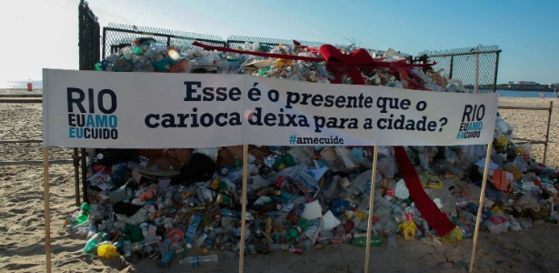
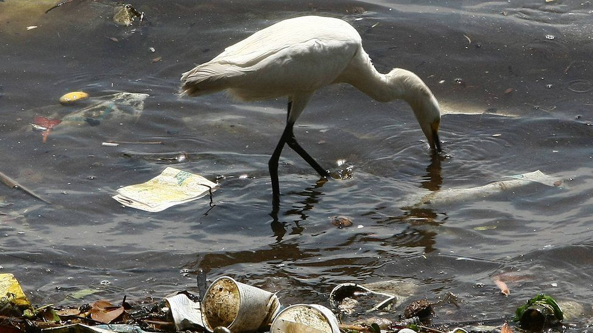

Nossa Ong
Pessoas diferentes, que, desde muito cedo, perceberam que havia algo de errado em nossos rios e em nossos mares. Desde
cedo, tinham vontade de mudar essa realidade. O que aconteceria se essas pessoas se juntassem? Foi daí, desse pensamento de
que havia algo de errado, que nossa Ong surgiu. Nós, pessoas diferentes, mas com pensamentos iguais, fundamos
a Plus Nature, e juntamos o nosso desejo puro, de deixar nossos rios e mares impecáveis.
Por que Lutamos?

Nós lutamos porque as pessoas precisam ser conscientizadas e incentivadas à ter mais respeito para com
os nossos rios. Eles, apesar de serem extremamente importantes para nós, são muito poluídos e mal cuidados, por isso que nós da Plus Nature
tomamos a iniciativa de investir pesado nessa causa. Para que, no futuro, tenhamos rios belíssimos que nos dão muito
orgulho!
Pelo o que lutamos?

Lutamos pela aparência dos rios, pela nossa qualidade de vida, mas não é só por isso!
Precisamos de rios limpos e bem cuidados, para termos uma melhor qualidade de vida, pois muitos dos nossos rios
são a única fonte de água para parte da população, mas o principal motivo é pelo
Meio Ambiente! Com a poluição dos rios, os nossos lixos afetam, principalmente, a vida marinha. Lutamos, principalmente, pelos belos
animaizinhos que coexistem conosco.
Por onde lutamos?
Somos uma Ong pequena e relativamente nova, então não temos muito alcance no momento, e precisamos
sempre estar revendo a situação como um todo e escolhendo os melhores métodos.
Estamos ativos principalmente na Baixada Santista, pois é de onde nós, fundadores, trabalhamos. Contudo,
a Plus Nature luta pelos rios de todo o solo brasileiro, já que, infelizmente, os problemas são exatamente os mesmos.
Precisamos do máximo de ajuda possível das pessoas e de nossos governantes,
para que essa nossa batalha seja vencida num piscar de olhos! Estamos de braços abertos para receber novos membros
que desejam o mesmo que nós, e de parcerias para que atinjamos o objetivo de limpar todo o solo brasileiro!
Opinião da Plus Nature
Esta seção é mais uma conversa do que qualquer outra coisa. Queremos expressar o que nós, fundadores da Plus Nature,
pensamos sobre toda a situação dos nossos rios e de nossos amados mares.
Em São Paulo, 41 rios são extremamente
poluídos; apenas 3% dos rios do Estado de São Paulo são livres de poluição, e isso é inaceitável! Isso se deve à vários fatores,
como, por exemplo, esgoto doméstico e agrotóxicos, mas, principalmente, pela falta de consciência das pessoas. E por causa disso
nossos rios são poluídos e nossos animais marinhos são mortos pelo lixo que os contamina
É exatamente
esse o ponto que queremos mudar, que vamos lutar ao máximo para mudar! Espero que todos vocês nos ajude nessa batalha,
e que sempre tenham consciência.